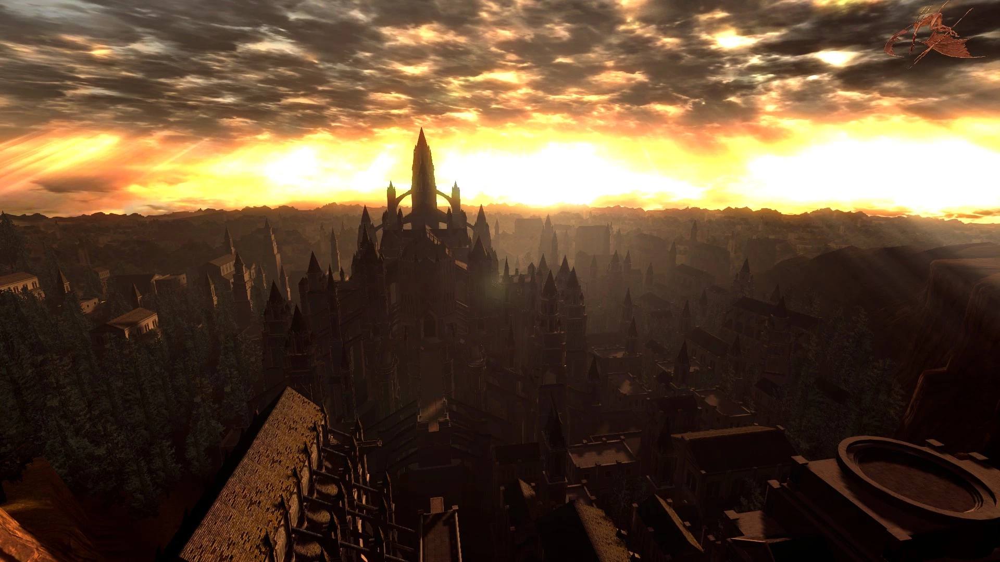
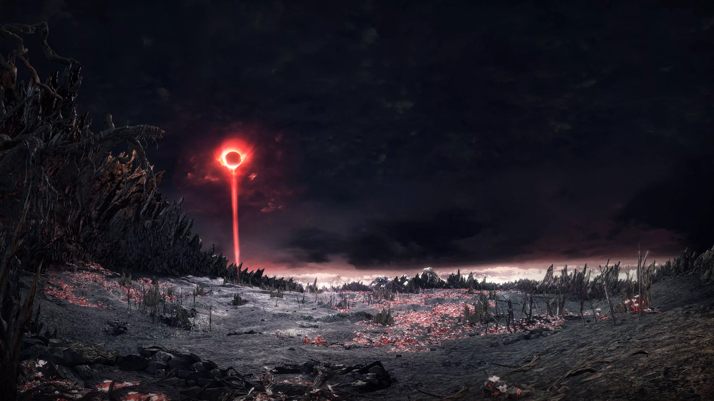
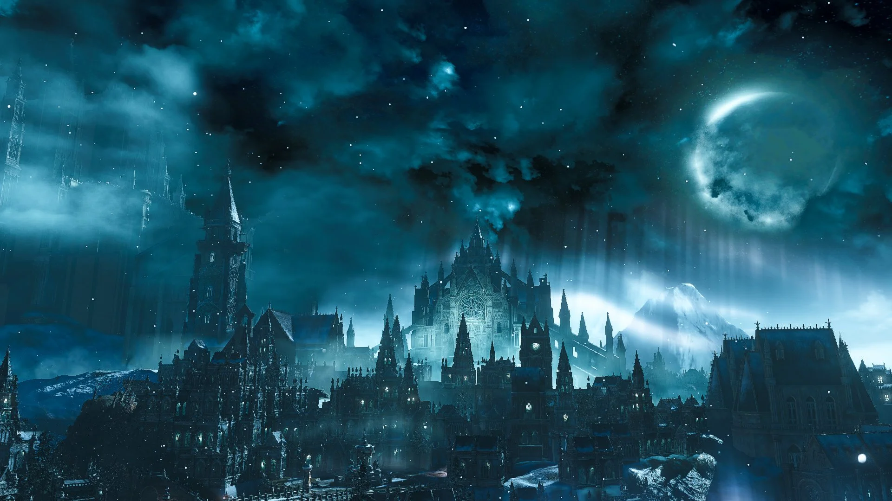
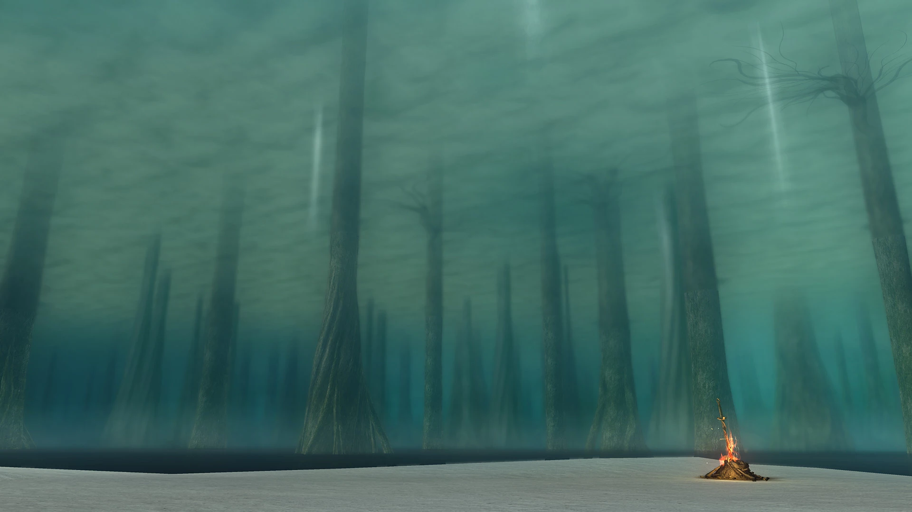

La saga mas odiada y amada en el mundo de los videojuegos.

Anor Londo
Ciudad de los Dioses.

Horno de la primera llama
Donde comenzó la edad del fuego, la vida y la muerte.

Irithyll del Valle Boreal
Ciudad debajo de Anor Londo, donde reinó el cruel Pontífice Sulyvahn.

Lago de la ceniza
Lago donde solían quedarse los dragones eternos, antes de ser masacrados.